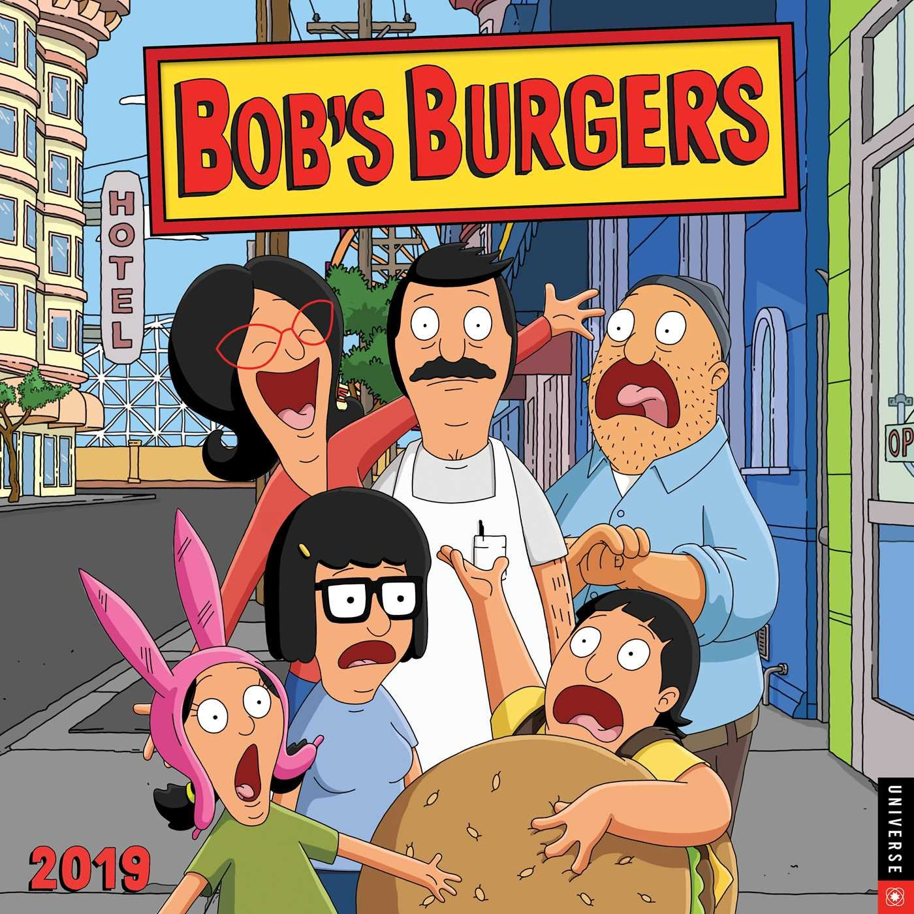

About Tina
Tina is a member of the Belcher family, who owns a burger restaurant. She is a middle schooler who is trying to navigate her teenage years.
Tina and her family.
Tina's Characteristics
- She's socially awkward.
- She's in love with Jimmy Pesto.
- She loves her family!
Tina's Family
Tina has an awesome family, she acts like she gets embarrased by them but you can tell she really loves them. As a whole family, they are hilarious! Click on the links below to read more about them: